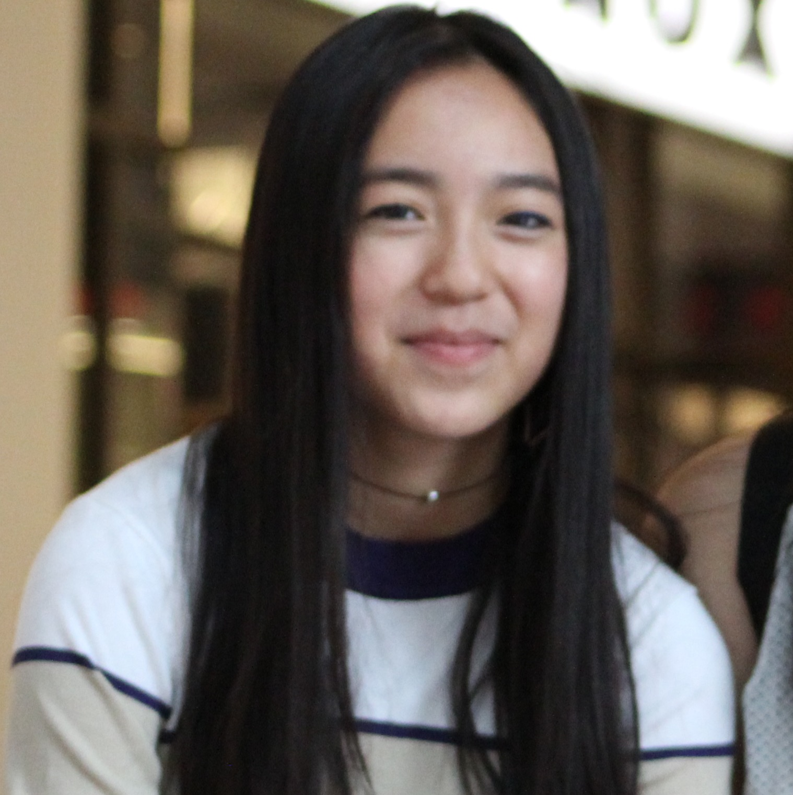
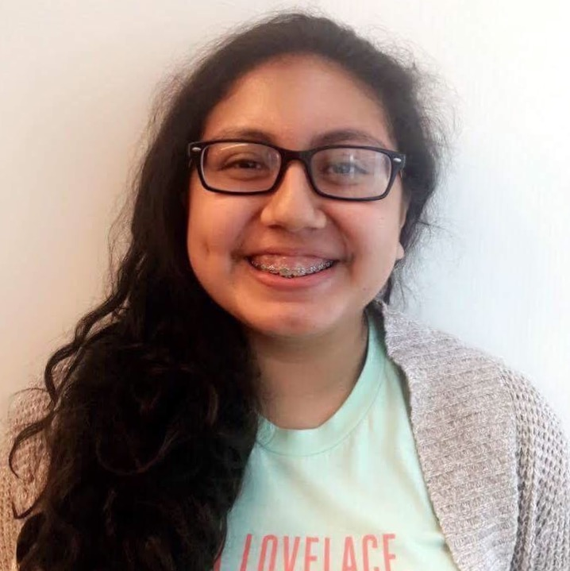
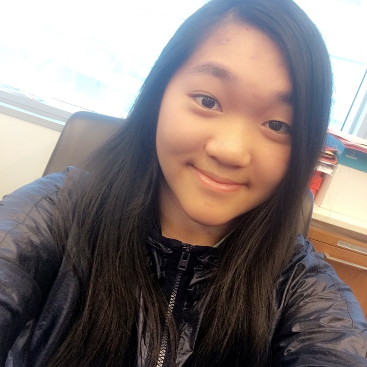

Alina Chen
Alina is a rising junior at Hunter College High School. She spends her time volunteering for city organizations promoting activism and urban sustainability. She joined Girls Who Code in 2017 and is interested in pursuing a career in computer science. When she is not coding or studying, you can find her reading, playing lacrosse, or dancing.
Jennifer Penaranda
Jennifer Penaranda is a rising junior at Science Park High School and has had an interest in computer science from a young age. In her free time, she likes to volunteer in her community, dance with her friends, or play video games. She hopes that Fountain Finder is the beginning to many great projects to come from her amazing team.
Christine Wu
Christine is your average rising high school junior at Stuyvesant High School with an evergrowing interest in the field of computer science, particularly web development and app design. She hopes that Fountain Finder will encourage everyone to be environmentally-friendly and to be more aware of the delicate nature of our surroundings. :)